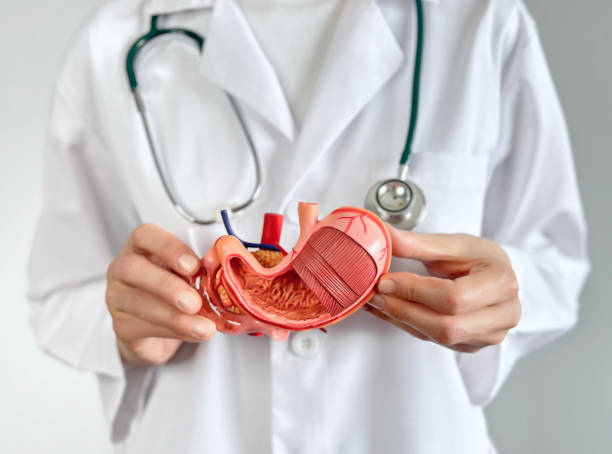

Consultații gastroenterologie
Evaluare pentru arsuri, reflux, balonare, dureri abdominale, greață, tulburări de tranzit și alte simptome digestive persistente.
- Evaluare atentă și recomandări personalizate
- Plan clar de investigații și tratament
- Programare rapidă în clinicile partenere din sibiu

Gastroscopie
Investigație recomandată pentru reflux, arsuri, dureri gastrice, greață sau alte simptome digestive superioare care necesită evaluare atentă.
- Examinarea esofagului, stomacului și duodenului
- Utilă în evaluarea simptomelor digestive superioare
- Informații clare privind pregătirea investigației

Colonoscopie
Investigație importantă pentru evaluarea colonului și rectului, recomandată în scop diagnostic sau de screening, în funcție de simptome și indicația medicală.
- Evaluarea colonului și rectului, prelevare biopsii
- Utilă în screening și în diagnosticul cancerului colo-rectal
- Programare rapidă în clinicile partenere din sibiu
Polipectomii endoscopice
Procedură endoscopică prin care pot fi îndepărtați polipii descoperiți în timpul investigațiilor digestive, ca parte a conduitei terapeutice recomandate.
- Abordare endoscopică modernă
- Integrare în planul terapeutic
- Explicații clare și accesibile pentru pacient
Ecografie abdominală
Investigație neinvazivă, rapidă și utilă în evaluarea organelor abdominale, frecvent recomandată în completarea consultației gastroenterologice.
- Gratuita prin CAS
- Investigație neinvazivă
- Recomandată în multiple situații digestive
Consultații prin CAS
Consultații gastroenterologice disponibile prin CAS, cu bilet de trimitere, în funcție de programul și condițiile clinicilor partenere.
- Necesită bilet de trimitere
- Informații clare la programare
- Disponibilitate în clinicile partenere